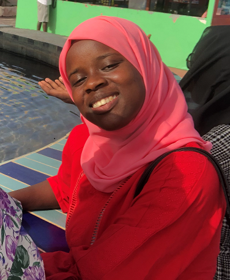

Dieynaba BA
09/10/2006 - 16 ans
Parcelles Assainies U 26
dba93990@gmail.com
765410410
Novembre 2022-Avril 2023 : Formation au codage et aux TICs organisée par WIA et Atos
2022-2023: Seconde S
Lycée d'Excellence Mariama Ba (Gorée-Rue Malavois)
Janvier 2023:Bibliothéconomie : Formation en gestion de bibliothèque
Juillet 2022:Brevet de Fin d'Etudes Moyennes
Lycée d'Excellence Mariama Ba (Gorée-Rue Malavois)
2018-2022:Lycée d'Excellence Mariama Ba (Gorée-Rue Malavois)
Juin 2018: Certificat de Fin d'Etudes Elémentaires
Ecole PAU26 (Parcelles Assainies Unité 26)
Informatique : maîtrise des logiciels Word, Power Point, Internet, base en Python, HTML
, Invite de Commandes DOS
Langues : Peulh (Langue maternelle), français, anglais, wolof, latin, grec
2022-2023 : Responsable de la classe de Latin(Remplissage du cahier de texte,
gérance de la propreté du tableau, du bureau du professeur et de la classe)
2021-2022 :Responsable de la classe de Latin( Remplissage du cahier de texte,
gérance de la propreté du tableau ,du bureau du professeur et de la classe)
2020-2021 : Responsable de la classe de 4ème
Remplissage du cahier de texte
Gérance de la propreté et de l’ordre dans la classe(tableau, bureau du professeur,
apporter de la craie)
Intermédiaire entre l’administration, le corps professoral, les surveillantes et la classe
2018-2019 : Ministre de la famille et de l’équité sociale
Maintient de la paix ,de l’entente et de la bonne cohésion entre les camarades de la promotion
Organisation d’un jumelage pour raffermir les liens
Ambitieuse, courtoise, ouverte d’esprit, éloquente, respectueuse, rigoureuse, ordonnée dans le travail
2022-2023 : Evénementiel : Organisation d’événements festifs et culturels
Membre du Staff du Club de Lettres Classiques
Organisation d’un week-end dans le cadre d’un jumelage avec le Lycée Ameth Fall de
St-Louis pour promouvoir les lettres classiques
Commercial à la boutique scolaire
Vente de produits alimentaires, scolaires, hygièniques
Gestion des fonds et bénéfices
04 Avril 2023:Défilé à la Place de la Nation
2021-2022: Secrétaire générale du Club de Lettres Classiques
Organisation d’activités pour la promotion du Latin et du Grec, gestion du bureau du
club, organisation d’une prestation de miss lors de la semaine culturelle
2020:Sortie pédagogique à Ziguinchor
2019 :Sortie pédagogique aux Iles du Saloum
Lecture
Badminton : apprentissage des bases
Cuisine